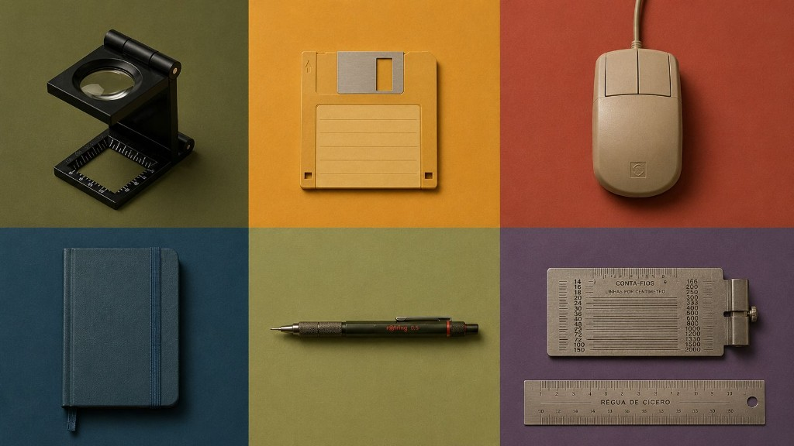

The tools changed. The standard didn't.

Taste Design OS · for the vibecoding era
Average is the default.
Authorship is a choice.
Anti-Slop OS runs inside your AI agent and catches generic, AI-generated UI before it ships — scored against real craft rules, with accessibility and a scored critique baked in.
An embedded Creative Director, not a linter.
A small, opinionated OS that runs inside Cursor and Claude Code while you vibecode. Every time you generate UI, it tests the output against four things:
Anti-slop rules
Stops Inter-by-default, generic gradients, centered-everything, bento-without-hierarchy and the rest of the "AI SaaS 2024" defaults.
An output gate
Three mandatory questions before any UI ships — the visual tension, what couldn't come from a model, what you deliberately left un-optimized.
WCAG AA
Contrast, touch targets, screen readers and text scaling, treated as a minimum bar.
A scored critique
A 0–10 AI Slop Score plus severity — Critical, High, Medium, Low — so you know what to fix first.
The tells of a design no human chose.
These are the defaults a model reaches for. Anti-Slop catches them at generation time — and asks for intent instead.
- axedAvoided: Inter / Roboto by default
- axedAvoided: Generic purple-pink gradients
- axedAvoided: Centered hero + three identical cards
- axedAvoided: Bento grid without a reading hierarchy
- axedAvoided: Monospace as decoration
- axedAvoided: Tiny body text, no grid, no rhythm
Critique what exists. Generate without the signature.
Slash commands in Cursor and Claude Code. Quick by default; ask for --full or --report when you want more.
/critiqueAnti-slop critique — Slop Score, layer-by-layer audit, top 3 fixes, a clear direction.
/designGenerate UI through the anti-AI-signature guardrail: intent gate, grid, contrast, firewall.
/slop-checkQuick gut-check — just the AI Slop Score, no full analysis.
/reportRender any critique as a friendly visual HTML report with the score — easy to share.
Works where you already are:
-
Cursor
Type
/critiqueor/designin the chat. -
Claude Code
The same slash commands, from your terminal.
-

VS Code
Call the skill inside your agent chat panel.
-
Claude.ai
Add the skill, then ask for a critique.
No build. No account. Just paste and go.
Open a terminal, paste each block, press Enter. Then quit and reopen your agent.
Clone it
git clone https://github.com/jferracini/anti-slop-os.git ~/anti-slop-osMake the scripts runnable
chmod +x ~/anti-slop-os/scripts/*.shInstall the skill
bash ~/anti-slop-os/scripts/install-skill.sh